2025 · RF & Communications
Superheterodyne FM Radio
A long-form RF project focused on understanding the superheterodyne receiver architecture, including antennas, bandpass filtering, RF amplification, mixing, local oscillation, IF filtering, demodulation, and audio output.

Video Demonstration
RF project demonstration
The demonstration shows the RF receiver as a physical build, connecting the theory-heavy signal chain to actual hardware testing.
 ▶ Watch on YouTube
▶ Watch on YouTube
Engineering Challenge
Follow an FM signal through a receiver signal chain.
A superheterodyne receiver is built around a sequence of RF and analog stages. The incoming radio signal is captured by an antenna, filtered, amplified, mixed with a local oscillator, shifted to an intermediate frequency, filtered again, demodulated, and finally converted into audio output.
This project is different from the other featured pages because much of the value is in understanding the signal path. The images should therefore be used as explanatory diagrams for each receiver stage, not as random media.
Portfolio note: this page intentionally uses fewer unsupported build claims. Images are paired only with the subsystem they actually illustrate.
Signal Chain Overview
Why superheterodyne architecture is useful
Instead of trying to process the received RF signal directly at its original carrier frequency, a superheterodyne receiver uses a mixer and local oscillator to shift the signal to a more convenient intermediate frequency. This makes filtering and demodulation more manageable.
The receiver was built as a signal chain, where each stage prepares the signal for the next one. Starting with the full block diagram makes it easier to understand why the antenna, filter, amplifier, mixer, oscillator, IF stage, demodulator, and audio output were treated as separate subsystems.
High-level process:
- Receive the RF signal.
- Select the desired frequency range.
- Amplify weak signals.
- Mix with a local oscillator.
- Filter/amplify at the intermediate frequency.
- Demodulate and output audio.
Antenna & Input Signal
Capturing the radio signal
The antenna is the front end of the receiver. Its job is to pick up electromagnetic waves and turn them into an electrical signal that can be processed by the rest of the circuit.
The antenna stage brought the received RF signal into the test setup through a breadboard-compatible connection, allowing the rest of the receiver chain to process the signal.
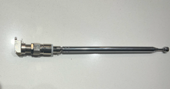
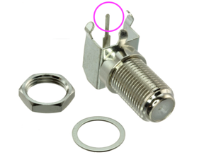
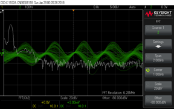
Bandpass Filtering
Selecting the useful frequency range
After the antenna, the receiver needs a way to focus on the desired frequency range and reject signals outside that range. This is where the bandpass filter becomes important.
Inductive and capacitive reactance change in opposite directions as frequency changes. The bandpass stage uses that frequency-dependent behavior to pass a selected band of signals while reducing unwanted frequencies outside the target range.
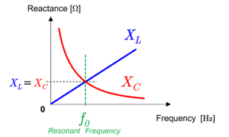
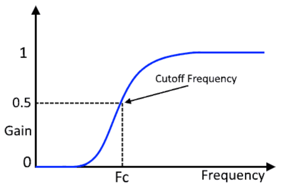
RF Amplifier, Mixer & Local Oscillator
Strengthening and shifting the signal
Once the desired RF signal has been selected, the receiver needs to amplify it and then shift it to the intermediate frequency. The mixer combines the received signal with a local oscillator signal, producing new frequency components that can be filtered into the IF stage.
These diagrams are included because they explain different parts of the receiver chain: amplification, mixing, and oscillation.
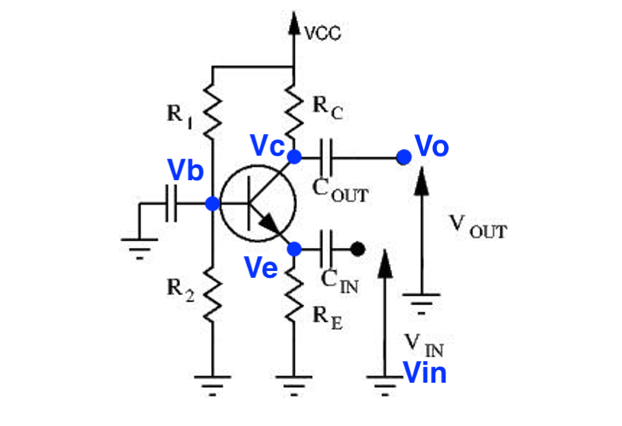
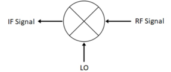
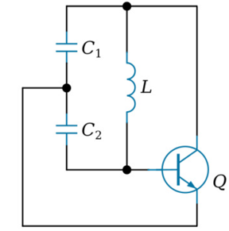
IF Stage, Demodulation & Audio
Recovering the information and producing sound
After mixing, the receiver works at an intermediate frequency. This makes it easier to filter and amplify consistently. The demodulator then extracts the information from the FM signal so it can eventually be converted into audio output.
The final images are mostly conceptual subsystem graphics, so they are kept concise and placed directly in the section where those subsystems are explained.
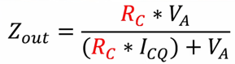
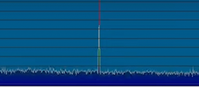
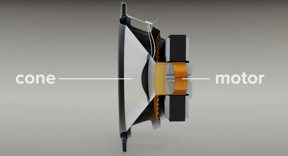
Key Takeaways
- Studied the full superheterodyne signal chain from antenna input to audio output.
- Connected RF concepts like filtering, mixing, oscillation, and demodulation into one receiver architecture.
- Built conceptual overlap with RF communication systems used in rocketry and telemetry.
- Improved ability to explain complex systems as a sequence of functional blocks.